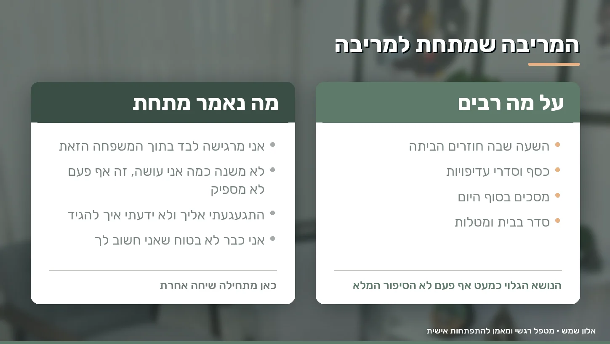
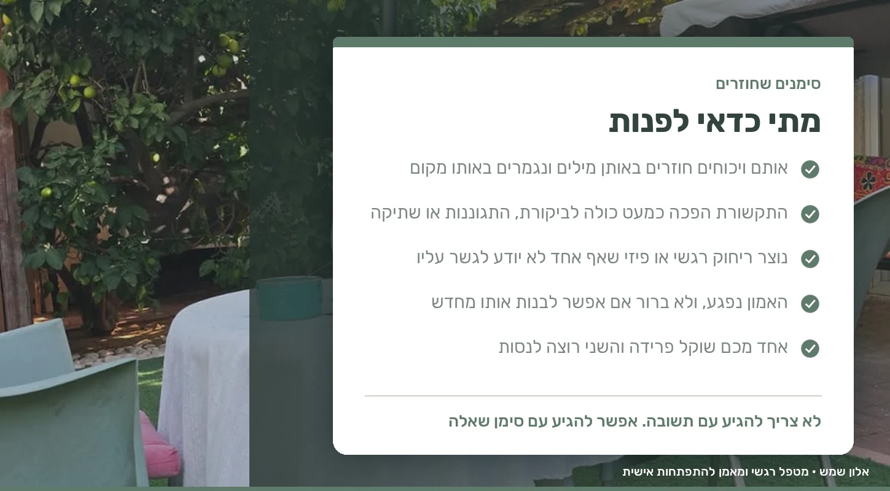

יש רגע שבו המילה גירושין מפסיקה להיות משהו שנזרק באמצע ריב, והופכת לאפשרות שיושבת בשקט בסלון גם אחרי שהריב נגמר.
אולי אתם כבר ישנים בחדרים נפרדים. אולי כל שיחה נגמרת בוויכוח, או שדווקא הפסקתם לריב כי אין כוח. אולי אחד מכם כבר אמר שהוא רוצה לסיים, והשני עדיין מבקש לנסות. ואולי שניכם פשוט עייפים, פגועים, ולא יודעים אם נשאר כאן משהו להציל.
אם הגעת לכאן, כנראה שהשאלה שמסתובבת לך בראש היא לא "איך מתגרשים". היא שאלה אחרת לגמרי: באמת הגיע הזמן להיפרד, או שהגענו למקום שבו אנחנו כבר לא מצליחים לראות דרך אחרת?
זו שאלה שמותר לעצור בשבילה. טיפול זוגי לפני גירושין לא נועד לשכנע אף אחד להישאר בכל מחיר, והוא לא שופט את מי שבוחר להיפרד. הוא נועד ליצור מקום שבו אפשר להבין מה קרה כאן, לפני שמקבלים החלטה שקשה לחזור ממנה.
איך מגיעים לרגע שבו גירושין נראים כמו הדרך היחידה
משבר זוגי עמוק כמעט אף פעם לא מתחיל ביום אחד. הוא נבנה לאט, בשכבות.
עוד ויכוח שנגמר בלי שנפתר. עוד אכזבה שנשארה בפנים כי לא היה נכון לדבר עליה באותו ערב. עוד שבוע שבו כל אחד בעולם שלו, פחות מגע, פחות סבלנות, יותר ביקורת.
עם הזמן נכנסים לדפוס קבוע. אחד מתקרב והשני מתרחק. אחד דורש לדבר והשני נסגר. אחד מרגיש שלא רואים אותו, והשני מרגיש שכל מה שהוא עושה אף פעם לא מספיק. בשלב הזה כבר לא רבים על הכלים בכיור או על השעה שבה מגיעים הביתה. רבים על כל מה שהצטבר מתחת.
אני קורא לזה מטאפורת הקרחון. מה שרואים מבחוץ, המילים והדלת שנטרקת, זה הקצה. מתחת לפני המים יושבים הדפוסים, האמונות והפגיעות שאף אחד לא דיבר עליהן בקול.
הקושי האמיתי מתחיל כשחיים בתוך הדפוס הזה מספיק זמן, ואז מתחילים לראות את בן או בת הזוג דרך המשבר עצמו. כל משפט מקבל פרשנות שלילית. גם ניסיון להתקרב נתקל בחשד או באדישות, כי כבר לא מאמינים שהוא אמיתי.
"כבר לא אוהבים כמו פעם". זה בהכרח הסוף?
לא בהכרח.
זוגיות ארוכה משתנה. ההתאהבות של השנה הראשונה לא אמורה להיראות כמו הזוגיות אחרי ילדים, משכנתה, הורים מזדקנים ושגרה שלא נותנת לנשום. השינוי הזה לבדו הוא לא סימן שמשהו נשבר.
לפעמים מה שנחווה כ"האהבה נגמרה" הוא בעצם ריחוק שהצטבר לאורך זמן. כשיש הרבה כעס ועלבון, קשה להרגיש קרבה. כשאין קרבה, האינטימיות נפגעת. וכשהאינטימיות נעלמת, קל מאוד להסיק שאין כאן יותר זוגיות.
לכן לפני שמחליטים שהרגש איננו, שווה לבדוק מה מונח מעליו. אין אהבה, או שיש כל כך הרבה פגיעה שכבר קשה להגיע אליה? אלה שתי שאלות שונות לגמרי, והתשובה עליהן משנה את כל מה שקורה אחר כך.
המריבה שמתחת למריבה
נניח שאתם רבים שוב ושוב על כך שאחד מכם חוזר מאוחר הביתה.
על פני השטח הוויכוח הוא על השעה. מתחתיו יכול לשבת משפט אחר לגמרי: "אני מרגישה לבד בתוך המשפחה הזאת". או: "אני מרגיש שלא משנה כמה אני עושה, תמיד מחכה לי ביקורת".
אותו דבר קורה בוויכוחים על כסף, על סדר בבית, על טלפונים, על המשפחות משני הצדדים, על הילדים ועל יחסי מין. הנושא הגלוי הוא כמעט אף פעם לא הסיפור המלא.

בחדר אנחנו עוסקים פחות בשאלה על מה אתם רבים, ויותר בשאלה מה כל אחד מכם חווה בתוך הריב. ברגע שמתחיל להיות ברור איזה צורך או איזה פחד יושב מתחת להתנהגות, אפשר לנהל שיחה אחרת. לא כי מישהו ויתר, אלא כי סוף סוף מדברים על הדבר הנכון.
הבעיה היא לא מי צודק
אחת המלכודות הגדולות במשבר זוגי היא הניסיון להכריע מי אשם.
כל אחד מגיע עם רשימה. מי השקיע יותר, מי פגע ראשון, מי הפסיק ליזום, מי אמר מה לפני שלוש שנים ומי צריך להשתנות. הרשימות האלה בדרך כלל מדויקות משני הצדדים, וזו בדיוק הבעיה. אפשר להיות צודק ואומלל באותה נשימה.
זוגיות היא לא ויכוח שצריך להכריע בו. אפשר בהחלט להכיר בפגיעה, בטעות ובאחריות האישית של כל אחד, אבל אם המטרה היא לבדוק אם אפשר לשקם, צריך להסתכל על הדינמיקה שנוצרה ביניכם ולא רק על מי התחיל.
לפעמים שינוי קטן באופן שבו צד אחד מגיב מייצר תגובה אחרת לגמרי אצל הצד השני, ומתחיל לפרק מעגל שרץ שנים.
ומה אם רק אחד מכם רוצה טיפול
זה אחד המצבים הכי שכיחים שאני פוגש, ואולי הסיבה שאתה קורא את זה לבד עכשיו.
לא תמיד שני בני הזוג מגיעים לאותה נקודה באותו זמן. אחד רוצה לנסות, השני כבר מותש, סקפטי, או משוכנע שזה בזבוז זמן.
במצב כזה לרוב לא עוזר לדרוש התחייבות גדולה בסגנון "אנחנו הולכים להציל את הנישואים". אפשר להתחיל ממטרה הרבה יותר צנועה: בואו נבין מה קרה לנו, לפני שאנחנו מחליטים. להרבה אנשים קל יותר להיכנס לדלת הזאת.
וגם אם בן או בת הזוג לא מוכנים כרגע להגיע בכלל, אפשר להתחיל לבד. בעבודה אישית אנחנו מסתכלים על הדפוסים שלך, על מה שאתה כן יכול להשפיע עליו ועל מה שלא, ועל הגבולות שאתה רוצה לשמור על עצמך גם בתוך המשבר. אנחנו מתחילים ממה שאתה מביא, ולא ממה שהצד השני מוכן או לא מוכן לעשות.
מה קורה בחדר אצלי
המפגש הראשון הוא בעיקר הקשבה. אני שומע איפה כל אחד עומד, מה נשבר ומתי, ומה כל אחד מכם עדיין רוצה. אין תבנית אחת שמתאימה לכולם, ואנחנו עובדים בקצב שלך.
אחת התחושות שאני שומע הכי הרבה היא "כבר דיברנו על הכול". זה נכון, ובדרך כלל זה גם מדויק. הבעיה היא שלדבר שוב ושוב על אותו דבר זה לא אותו הדבר כמו לשנות אותו. לכן העבודה נעה בין שלושה רבדים:
- תודעה, זיהוי הדפוסים והאמונות שמנהלים את הקשר מאחורי הקלעים, בעזרת כלים מתחום ה-NLP שעוסקים בעבודה עם דפוסים והרגלים
- רגש, מתן מקום למה שמרגישים, הורדת עוצמת הרעש הפנימי, ובניית קצת שקט שאפשר לדבר בתוכו
- פעולה, תרגום להתנהגות יומיומית. איך עוצרים ויכוח לפני שהוא יוצא משליטה, איך אומרים מה אני צריך בלי לתקוף, איך מקשיבים בלי להתכונן כבר לתשובה, ואיך מחזירים בהדרגה פעולות קטנות של קרבה
לפעמים אני משתמש גם בדמיון מודרך, סיפור מכוון בליווי הרפיה ונשימה, ולפעמים בקלפי השראה, קלפים שמשלבים תמונה ומילה. אלה לא קלפי ניבוי אלא פותחי שיח, והם עוזרים במיוחד למי שמתקשה למצוא את המילים מול בן או בת הזוג.
הקליניקה שלי בדובנוב 51 ברחובות. יש בה חדר טיפולים עם דלת שנסגרת ואור רך, ויש חצר ירוקה עם פינת ישיבה, למי שדווקא בתוך חדר סגור מתקשה לדבר. אפשר לעבור בין השניים גם באמצע התהליך, ואפשר גם בזום. אני מטפל רגשי ומאמן להתפתחות אישית, NLP Master Practitioner מטעם מכללת יוזמות וחבר לשכת ה-NLP הישראלית, תעודה 11069, וכל הפירוט נמצא בעמוד מי אני.
מתי כדאי לפנות
אין רגע אחד נכון, אבל יש כמה סימנים שחוזרים אצל מי שמגיע בשלב הזה:
- אותם ויכוחים חוזרים על עצמם, באותן מילים, ונגמרים באותו מקום
- התקשורת ביניכם הפכה כמעט כולה לביקורת, התגוננות או שתיקה
- נוצר ריחוק רגשי או פיזי שאף אחד לא יודע איך לגשר עליו
- האמון נפגע, ואתם לא בטוחים אם ואיך אפשר לבנות אותו מחדש
- אחד מכם שוקל פרידה והשני רוצה לנסות
- שניכם פשוט לא יודעים אם אתם רוצים להישאר
אתה לא צריך להגיע עם תשובה. אפשר להגיע עם סימן שאלה.

ומה אם בסוף תחליטו להיפרד
זו אפשרות אמיתית ואני לא מתחמק ממנה.
טיפול זוגי לא נמדד רק בשאלה אם נשארתם יחד. יש זוגות שהתהליך מחזיר אותם לשיחה ולקשר אחר, ויש זוגות שהוא מבהיר להם שהפרידה היא הדבר הנכון עבורם. גם התוצאה השנייה שווה את הזמן, כי היא מגיעה מתוך בירור ולא מתוך התפרצות באמצע הלילה.
ולאופן שבו נפרדים יש משמעות עצומה, במיוחד כשיש ילדים. אתם אולי מפסיקים להיות זוג, אבל אתם לא מפסיקים להיות הורים, ותמשיכו להיפגש בטקסים, באסיפות הורים ובימי הולדת עוד הרבה מאוד שנים. פרידה שמגיעה אחרי שיחה, הבנה וירידה בעוינות נראית אחרת לגמרי מפרידה שקורית בשיא הסערה.
כשיש ילדים בבית
ילדים מרגישים את המתח גם כשההורים משוכנעים שהם "לא רבים לידם". הם קולטים שתיקות, ריחוק, ושינוי קטן בטון של ארוחת הערב.
בתקופה כזאת אחת המשימות החשובות היא לשמור, כמה שאפשר, על הפרדה בין הקונפליקט הזוגי לבין התפקיד ההורי. לא להפוך את הילד לשליח בין שני החדרים, לא לבקש ממנו לבחור צד, ולא לשתף אותו בפרטים שאינם מתאימים לגילו. ובעיקר, לא לתת לו את התפקיד של מי שמנחם את ההורים.
אם אתה מזהה שהמתח בבית כבר יושב על הילד עצמו, אפשר גם ליווי רגשי לילדים במקביל לתהליך הזוגי.
מתי טיפול זוגי אינו הכלי הנכון
יש מצבים שבהם השאלה הראשונה היא לא איך משקמים את הזוגיות.
במצבים של אלימות, פחד, איומים, שליטה או כפייה, בין שהם מופנים כלפיך ובין שהם מופנים כלפי הילדים, השאלה הראשונה היא ביטחון. טיפול זוגי מניח שני אנשים שבטוח להם להיות באותו חדר, וכשההנחה הזאת לא מתקיימת זה לא הכלי הנכון. יש מצבים נוספים שבהם עבודה אישית או פנייה לגורם מקצועי אחר נכונה יותר, לצד התהליך הזוגי או במקומו.
אם אתה או מישהו קרוב לך במצוקה עכשיו:
- ער"ן, עזרה ראשונה נפשית: 1201, וואטסאפ 052-8451201, SMS 052-9993544, וצ'אט באתר
- נט"ל: 1-800-363-363, 24 שעות ביממה כל ימות השנה
- סה"ר: צ'אט באתר
- קווי הסיוע של קופות החולים: כללית *8703, מכבי *3555, מאוחדת *3833, לאומית *507
כמה שאלות לשאול את עצמך רגע לפני ההחלטה
- אני באמת רוצה לסיים את הקשר, או שאני בעיקר רוצה שהכאב הנוכחי ייפסק?
- אמרתי לבן או בת הזוג מה אני באמת צריך, או בעיקר מה הם עושים לא בסדר?
- ניסינו לשנות את הדינמיקה בינינו, או שאנחנו חוזרים לאותה שיחה בגרסאות שונות?
- נשארו בינינו רגעים של חיבה, חברות או אכפתיות, גם אם נדירים?
- ואם הייתה אפשרות אמיתית שהזוגיות שלנו תיראה אחרת, הייתי רוצה לנסות?
לא חייבת להיות תשובה מיידית. לפעמים עצם זה שיש מקום בטוח לשאול בו את השאלה הוא כבר תחילת השינוי.
שאלות שחוזרות אליי
טיפול זוגי יכול למנוע גירושין?
אי אפשר להבטיח תוצאה, וזו גם לא בדיוק המטרה. התהליך מאפשר להבין את הקושי, לזהות את הדפוסים שחוזרים, ולבדוק אם יש רצון ויכולת לייצר שינוי בקשר. ההחלטה נשארת שלכם.
אפשר להגיע בלי בן או בת הזוג?
אפשר. חלק מהאנשים שמגיעים אליי בשלב הזה באים לבד, כי הצד השני עוד לא מוכן או כי הם רוצים קודם להבין מה הם עצמם רוצים. אנחנו מתחילים ממה שאתה מביא, ולפעמים שינוי אצל צד אחד מזיז גם את הדינמיקה בבית.
כבר החלטנו להתגרש. יש טעם?
לפעמים כן. אם ההחלטה עדיין לא סופית, זה המקום לברר אותה. וגם כשהיא סופית, ליווי יכול לעזור לעבור את הפרידה בצורה מכובדת יותר, במיוחד כשיש ילדים משותפים ואתם תמשיכו להיות הורים ביחד.
כמה זמן לתת לתהליך לפני שמחליטים?
אין מספר מפגשים שמתאים לכולם. זה תלוי בעומק המשבר, בכמה זמן הוא נמשך, ובנכונות של שניכם לעבוד. אחרי המפגש הראשון בדרך כלל כבר אפשר לדבר על סדר גודל, ואנחנו עובדים בקצב שלך.
אפשר לעבוד גם אחרי פגיעה באמון?
בהרבה מקרים כן, אבל זה תהליך ולא הצהרה. סליחה אמיתית היא לא "בוא נשכח מזה". קודם צריך להבין את עומק הפגיעה ולתת לה מקום, ורק אחר כך לבדוק איך בונים מחדש תחושת ביטחון. ההתאמה תלויה בשניכם ובנסיבות.
אם המילה גירושין כבר נמצאת אצלכם על השולחן ועדיין יש בך שאלה אם אפשר אחרת, אפשר להתחיל משיחה. אתה לא צריך להגיע עם החלטה להישאר. מספיק להגיע עם נכונות לבדוק. את הצעד הראשון אתה עושה לבד, את כל השאר נעשה ביחד.
רוצה להתחיל? אפשר תיאום שיחת היכרות או חייג אליי, 054-3333265. המפגשים מתקיימים בקליניקה בדובנוב 51 ברחובות, וגם בזום.